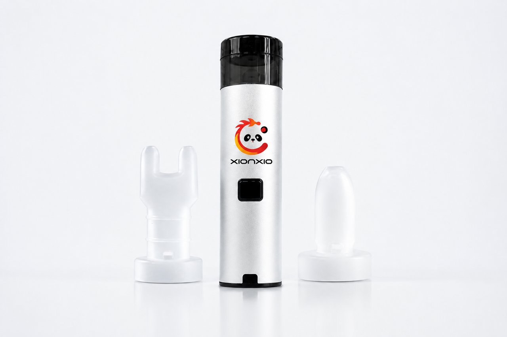

Portable Nebulizer Distributor Evaluation Guide
How importers and regional distributors can structure a product-file, document and sample review without assuming final market access.
Read guide →KNOWLEDGE / 01 B2B PROCUREMENT GUIDES
Practical guides for distributors, importers, clinic procurement teams and private-label buyers. Topics focus on models, documents, samples and project preparation—not unverified disease-treatment claims.

Begin with model identity, then move through the specification record, document checklist, sample evaluation and project brief. This guide turns a generic supplier search into a buyer-ready process.
Read supplier checklist →How importers and regional distributors can structure a product-file, document and sample review without assuming final market access.
Read guide →Bring market, model, packaging, document and commercial inputs together before asking for a private-label programme.
Read guide →Which files to request, why country and model matter, and how to keep public copy aligned with final documentation.
Read guide →Two model names do not automatically mean one specification. Learn how to control comparisons and buyer expectations.
Read guide →A practical framework for aligning the model, sample purpose, documents, feedback and next decision.
Read guide →Use source images to start a discussion; use final specifications and IFUs to set final public language.
Open product control note →